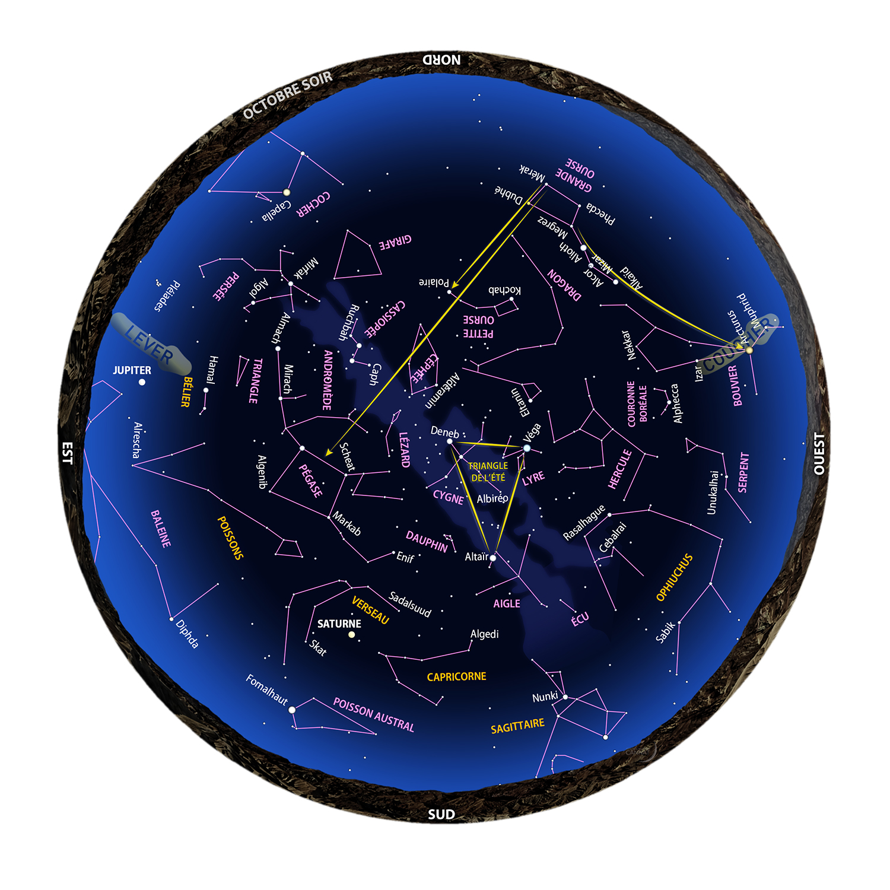
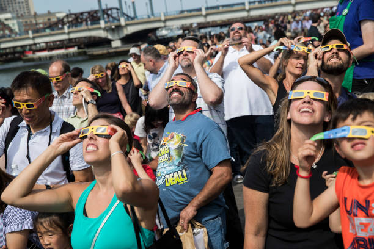
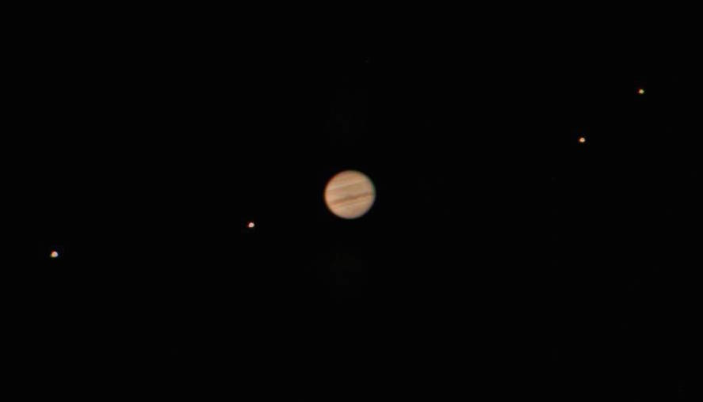
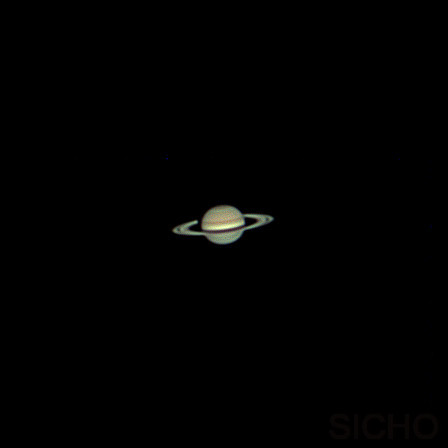
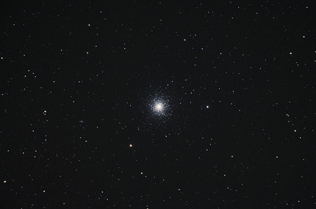
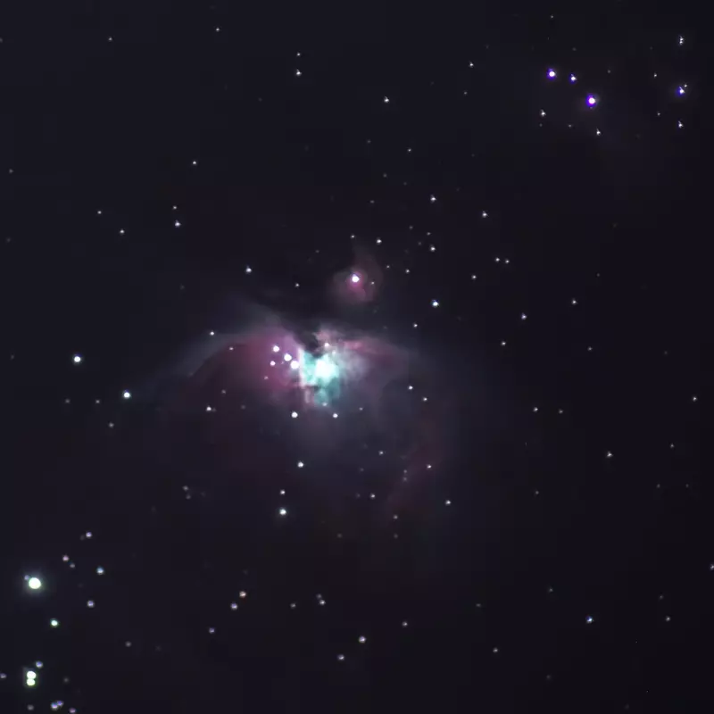
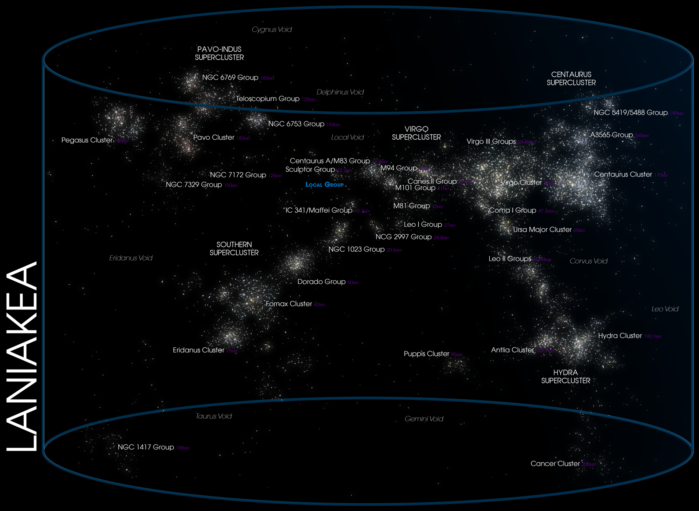

- Site, vêtements,
lampe rouge
- Œil nu, jumelles, télescopes
- Pas d’écran,
ni de smartphone ou de laser!
Qu’est-ce qu’une
constellation?

La Grande Ourse!

Cartes du ciel

www.lemonde.fr/blog/autourduciel

Le Zodiaque


La Lune - 300000 km / 1
seconde-lumière

Le Soleil
- 150 millions de km (1 UA) / 8 minutes-lumière

Jupiter -
780 millions de km / 5,2 UA/ 40 minutes-lumière

Saturne
- 1.4 milliards de km / 10 UA / 74 minutes-lumière

Comètes -
0,1 à 200000 UA - jusqu’à une année-lumière (?)

Notre
galaxie, la Voie Lactée - 90000 années-lumière

Grand Amas
d’Hercule (M13) - 22 années-lumière

Nébuleuse d’Orion
(M42) - 1300 années-lumière

Galaxie
d’Andromède (M31) - 2,5 millions d’années-lumière

Galaxie
du Tourbillon (M51) - 32 millions d’années-lumière

Superamas
Laniakea - 520 millions d’années-lumière

- Clubs
- Blogs
- https://www.universalworkshop.com/blog/
- www.lemonde.fr/blog/autourduciel